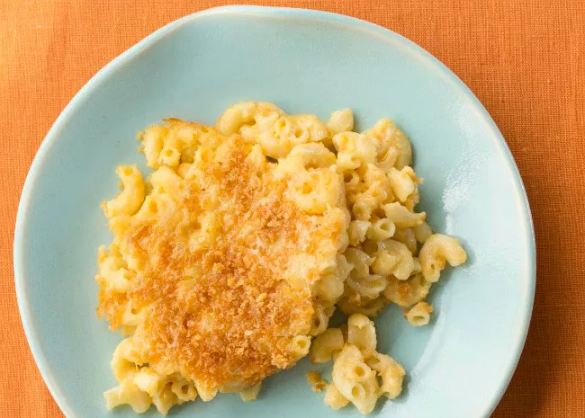

Mac and Cheese Recipe

Description
This recipe is a simple and flavorful Mac and Cheese recipe which is easy to make and a pleasure to serve and to eat to your family for a quick meal.All you need is some macaroni ,butter , cheese and some other things and you'll be good to go.
Ingredients
- 8 ounces of uncooked macaroni
- 1/4 cup salted butter
- 3 tablespoons of all purpose flour
- 2 1/2 cups of milk
- 2 cups of shredded cheddar cheese
- 1/2 cup of grated parmersian.
- salt and ground black pepper
Steps
- Begin preheating your oven to 350° Farenheight (175° Celcius).
- Bring a large pot of lightly salted water to a boil. Add macaroni and simmer, stirring occasionally, until tender yet firm to the bite, about 8 minutes; it will finish cooking in the oven. Drain and transfer to the prepared baking dish
- Melt 1/4 cup of butter in low heat. Whisk it in flour until it becomes golden brown paste
- Now whisk the milk into the flour butter mix
- Now stir the cheddar and parmesean and salt and pepper into the mix and cook while stiring until cheese is melted and the sauce is thick. add more milk if neccesary. When done pour this cheese sauce we made overe the macaroni and stir it so it combines well.
- Optional but now we can make bread crumb topping , melt 2 table sppons of butter , add bread crumbs and cook and stir until the crumbs are coated and we can then spread the crumbs over the mac and cheese
- Now we bake the mac and cheese in the oven for about 30 min until it looks golden brown abd theb its ready to be eaten!